CC2: Temperatura y Escala Absoluta
¿Qué es la temperatura? Construcción operacional desde el gas ideal, escalas termométricas, definición absoluta (Kelvin) y su significado microscópico como energía cinética promedio y como derivada de la entropía.
Temas que cubre
- Ley cero de la termodinámica: base operacional del concepto de temperatura
- Termómetros y escalas: Celsius, Fahrenheit y la escala absoluta de Kelvin
- Temperatura del gas ideal: $pV = Nk_BT$ como definición empírica de $T$
- Temperatura absoluta cero: imposibilidad de alcanzarlo (tercera ley)
- Interpretación microscópica: $T$ como energía cinética traslacional media $\langle E_k\rangle = \tfrac{3}{2}k_BT$
- Definición estadística: $1/T = (\partial S/\partial U)_{V,N}$
Conceptos clave
Ley cero
Si el sistema A está en equilibrio térmico con B, y B con C, entonces A está en equilibrio con C. Esta transitividad garantiza la existencia de una función de estado (la temperatura) que toma el mismo valor en sistemas en contacto térmico.
Escala absoluta de Kelvin
Definida por el ciclo de Carnot, independiente del termómetro usado: $T_{fría}/T_{caliente} = 1 - \eta_{Carnot}$. El cero absoluto ($T=0$ K) es el límite teórico donde toda agitación térmica cesa. No alcanzable en número finito de pasos (tercera ley).
$T$ como energía cinética
Para gas monoatómico ideal: $\langle\frac{1}{2}mv^2\rangle = \frac{3}{2}k_BT$. Cada grado de libertad traslacional contribuye $\frac{1}{2}k_BT$ (equipartición). A $T=0$ K, la energía de punto cero cuántica persiste — la mecánica clásica falla.
Temperatura estadística
La definición más fundamental: $\frac{1}{T} = \left(\frac{\partial S}{\partial U}\right)_{V,N}$. La temperatura es el recíproco de cuánto aumenta la entropía al agregar energía. A $T$ alta, la energía adicional produce poco aumento de $S$; a $T$ baja, produce mucho.
Fórmulas fundamentales



Qué hay que entender
- La temperatura no es una propiedad de una partícula — es una propiedad estadística del sistema completo. "La temperatura de un electrón" no tiene sentido en termodinámica clásica.
- La escala de Kelvin es absoluta porque no depende del termómetro: se define a través del rendimiento del ciclo de Carnot, que es una propiedad universal de los procesos reversibles.
- El cero absoluto no es alcanzable en la práctica (tercera ley de la termodinámica), pero se puede aproximar arbitrariamente. El récord experimental está en el rango de nanokelvin (condensados de Bose-Einstein en laboratorio).
- La definición $1/T = (\partial S/\partial U)_{V,N}$ permite entender por qué el calor fluye del cuerpo caliente al frío: el sistema de mayor $T$ tiene menor $\partial S/\partial U$, así que transferir energía del caliente al frío aumenta $S_{total}$.